File: 000720.gt.txt (if the image is defective, simply delete all Arabic text and the line will be excluded)
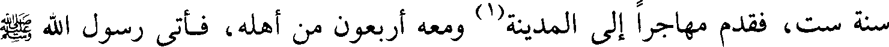
سنة ست، فقدم مهاجرا إلى المدينة(1) ومعه أربعون من أهله، فأتى رسول الله صلعم
File: 000721.gt.txt (if the image is defective, simply delete all Arabic text and the line will be excluded)
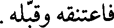
فاعتنقه وقبله.
File: 000722.gt.txt (if the image is defective, simply delete all Arabic text and the line will be excluded)
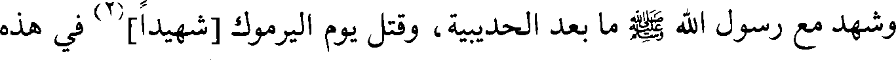
وشهد مع رسول الله صلعم ما بعد الحديبية، وقتل يوم اليرموك [شهيدا](2) في هذه
File: 000723.gt.txt (if the image is defective, simply delete all Arabic text and the line will be excluded)
File: 000724.gt.txt (if the image is defective, simply delete all Arabic text and the line will be excluded)
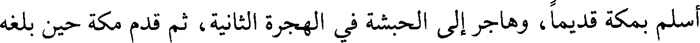
أسلم بمكة قديما، وهاجر إلى الحبشة في الهجرة الثانية، ثم قدم مكة حين بلغه
File: 000725.gt.txt (if the image is defective, simply delete all Arabic text and the line will be excluded)
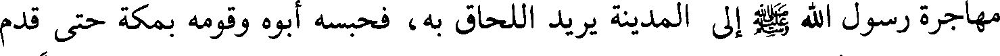
مهاجرة رسول الله صلعم إلى المدينة يريد اللحاق به، فحبسه أبوه وقومه بمكة حتى قدم
File: 000726.gt.txt (if the image is defective, simply delete all Arabic text and the line will be excluded)
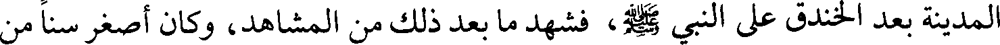
المدينة بعد الخندق على النبي صلعم، فشهد ما بعد ذلك من المشاهد، وكان أصغر سنا من
File: 000727.gt.txt (if the image is defective, simply delete all Arabic text and the line will be excluded)
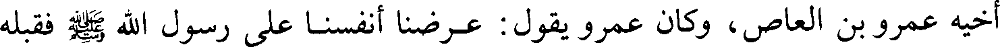
أخيه عمرو بن العاص، وكان عمرو يقول : عرضنا أنفسنا على رسول الله صلعم فقبله
File: 000728.gt.txt (if the image is defective, simply delete all Arabic text and the line will be excluded)
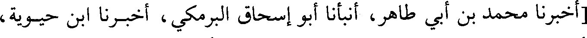
[أخبرنا محمد بن أبي طاهر، أنبأنا أبو إسحاق البرمكي، أخبرنا ابن حيويه،
File: 000729.gt.txt (if the image is defective, simply delete all Arabic text and the line will be excluded)
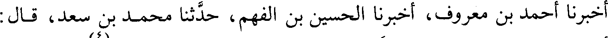
أخبرنا أحمد بن معروف، أخبرنا الحسين بن الفهم، حدثنا محمد بن سعد، قال :
File: 000730.gt.txt (if the image is defective, simply delete all Arabic text and the line will be excluded)
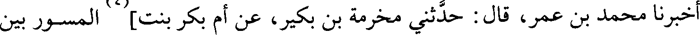
File: 000731.gt.txt (if the image is defective, simply delete all Arabic text and the line will be excluded)
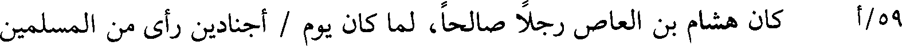
59/أ كان هشام بن العاص رجلا صالحا، لما كان يوم / أجنادين رأى من المسلمين
File: 000732.gt.txt (if the image is defective, simply delete all Arabic text and the line will be excluded)
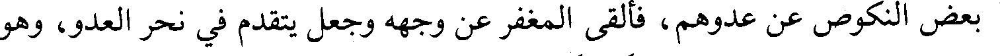
بعض النكوص عن عدوهم، فألقى المغفر عن وجهه وجعل يتقدم في نحر العدو، وهو
File: 000733.gt.txt (if the image is defective, simply delete all Arabic text and the line will be excluded)
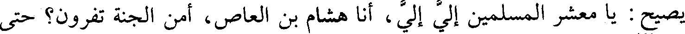
يصيح : يا معشر المسلمين إلي إلي، أنا هشام بن العاص، أمن الجنة تفرون؟ حتى
File: 000734.gt.txt (if the image is defective, simply delete all Arabic text and the line will be excluded)
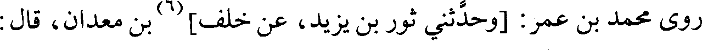
روى محمد بن عمر: [وحدثني ثور بن يزيد، عن خلف](6) بن معدان، قال :
File: 000735.gt.txt (if the image is defective, simply delete all Arabic text and the line will be excluded)
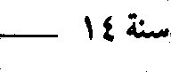
File: 000736.gt.txt (if the image is defective, simply delete all Arabic text and the line will be excluded)
الأرض يرثها عبادي الصالحون)(1). هذا ميراثكم(2) وموعود(3) ربكم، فأنتم منذ
File: 000737.gt.txt (if the image is defective, simply delete all Arabic text and the line will be excluded)
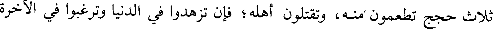
ثلاث حجج تطعمون منه، وتقتلون أهله؛ فإن تزهدوا في الدنيا وترغبوا في الآخرة
File: 000738.gt.txt (if the image is defective, simply delete all Arabic text and the line will be excluded)
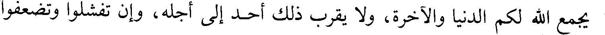
يجمع الله لكم الدنيا والآخرة، ولا يقرب ذلك أحد إلى أجله، وإن تفشلوا وتضعفوا
File: 000739.gt.txt (if the image is defective, simply delete all Arabic text and the line will be excluded)
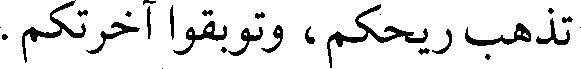
تذهب ريحكم، وتوبقوا آخرتكم.
File: 000740.gt.txt (if the image is defective, simply delete all Arabic text and the line will be excluded)
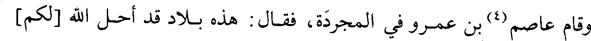
وقام عاصم(4) بن عمرو في المجردة، فقال : هذه بلاد قد أحل الله [لكم]
File: 000741.gt.txt (if the image is defective, simply delete all Arabic text and the line will be excluded)
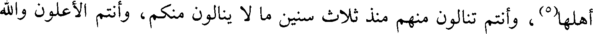
أهلها(5)، وأنتم تنالون منهم منذ ثلاث سنين ما لا ينالون منكم، وأنتم الأعلون والله
File: 000742.gt.txt (if the image is defective, simply delete all Arabic text and the line will be excluded)
معكم؛ إن صبرتم فالضرب والطعن ولكم أموالهم ونساؤهم وأبناؤهم وبلادهم، ولئن
File: 000743.gt.txt (if the image is defective, simply delete all Arabic text and the line will be excluded)
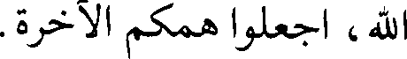
الله، اجعلوا همكم الآخرة.
File: 000744.gt.txt (if the image is defective, simply delete all Arabic text and the line will be excluded)
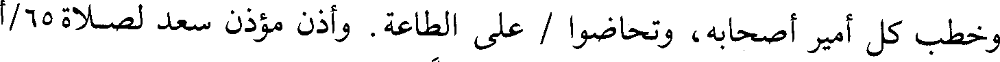
وخطب كل أمير أصحابه، وتحاضوا / على الطاعة. وأذن مؤذن سعد لصلاة 65/أ
File: 000745.gt.txt (if the image is defective, simply delete all Arabic text and the line will be excluded)
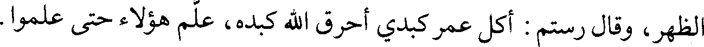
الظهر، وقال رستم : أكل عمر كبدي أحرق الله كبده، علم هؤلاء حتى علموا.
File: 000746.gt.txt (if the image is defective, simply delete all Arabic text and the line will be excluded)
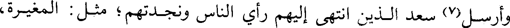
وأرسل(7) سعد الذين انتهى إليهم رأي الناس ونجدتهم؛ مثل : المغيرة،
File: 000747.gt.txt (if the image is defective, simply delete all Arabic text and the line will be excluded)
وحذيفة، وعاصم بن عمرو. ومن أهل النجدة : طليحة، وقيس الأسدي، وغالب،
File: 000748.gt.txt (if the image is defective, simply delete all Arabic text and the line will be excluded)
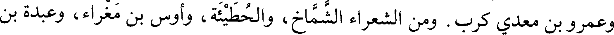
وعمرو بن معدي كرب. ومن الشعراء الشماخ، والحطيئة، وأوس بن مغراء، وعبدة بن
File: 000749.gt.txt (if the image is defective, simply delete all Arabic text and the line will be excluded)
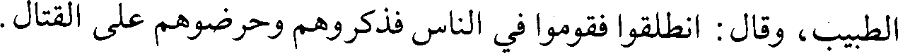
الطبيب، وقال : انطلقوا فقوموا في الناس فذكروهم وحرضوهم على القتال.
To Save: `Ctrl+s`, make sure to choose `Webpage, complete`!